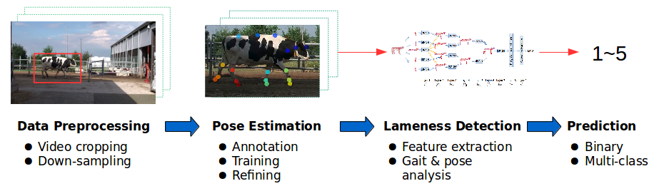

Lameness Detection
Posted on 06 August, 2025
Lameness is a serious disorder in dairy farms that increases the risk of culling of cattle as well as economic losses. The issue is addressed by lameness detection using locomotion scoring [1], which assesses the lameness level of cattle by their pose and gait patterns. This proof-of-concept study aims to evaluate whether lameness detection can be achieved by modeling video recordings as time series data.

This study investigates the feasibility of detecting bovine lameness from video data by modeling gait and pose as skeleton-based time series. The pipeline is shown in Figure 1. As previous studies show that the lameness level is correlated with the back posture and gait patterns [1-2], the proposed method used gait and pose as features for lameness detection. Raw videos were segmented into single-cow walking clips, and 25 anatomical keypoints were extracted using DeepLabCut [3]. The resulting sequences were classified using a Hierarchical Recurrent Neural Network (HRNN), with Random Forest and K-Means clustering as baselines.
References
- [1] DJ Sprecher, DE Hostetler, JB Kaneene. A lameness scoring system that uses posture and gait to predict dairy cattle reproductive performance. Theriogenology, 47(6), 1179-1187, 1997.
- [2] A Poursaberi, C Bahr, A Pluk, D Berckmans, T Veermäe, E Kokin, V Pokalainen. Online lameness detection in dairy cattle using Body Movement Pattern (BMP). 2011 11th International Conference on Intelligent Systems Design and Applications. IEEE, 2011.
- [3] A Mathis, P Mamidanna, KM Cury, T Abe, VN Murthy, MW Mathis & M Bethge. DeepLabCut: markerless pose estimation of user-defined body parts with deep learning. Nature neuroscience, 21(9), 1281-1289, 2018.